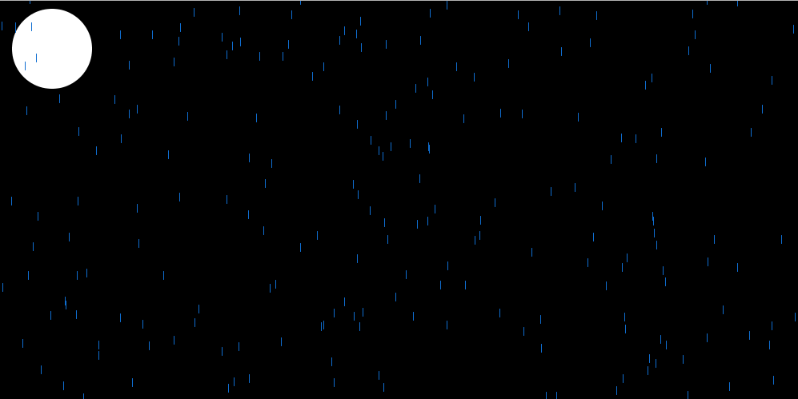
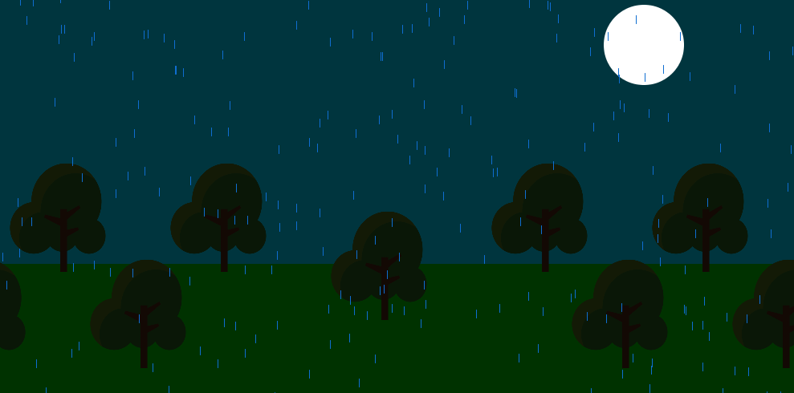
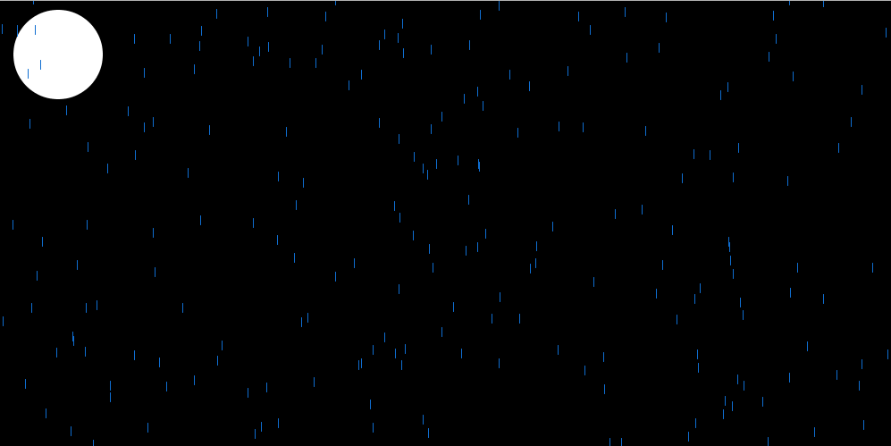
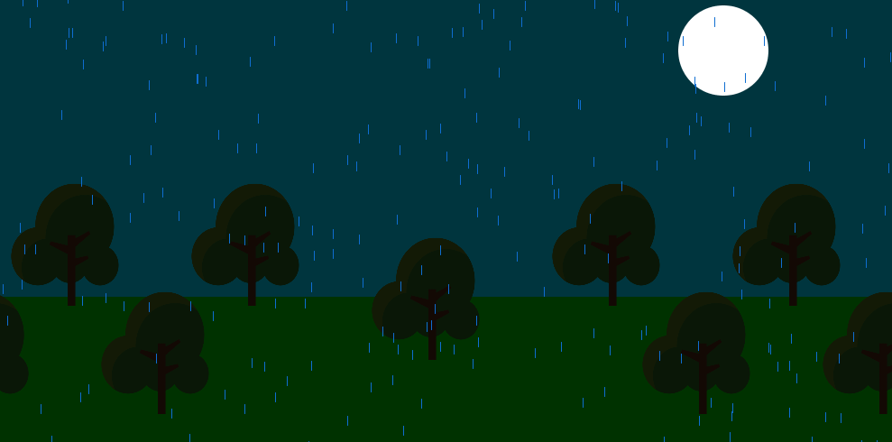

Humzah Chowdry
Hello, my name is Humzah Chowdry and I'm a student of City, University of London and I am studying Computer Science. The main programing experience that I had before the coding Bootcamp was with a program called Visual Basic, which includes more dragging and dropping so it doesn't really compare to the work that I have been able to accomplish within the Bootcamp.

Bootcamp 2020: Days Gone
My first programming project, concluding the 2-week Programming Bootcamp at City (2020). This Processing project demonstrates a comprehensive understanding of the use of arrays, loops, and classes.
My project is a forest that changes depending on the position of the sun and the moon. There is also a bird that flies past in the beginning and it has an audio file that is attached to it. After some time it begins to rain and I created the rain through the use of an array and a class. i was also able to impliment an audio file of trees in the wind and rain when it begins to fall. If you look carefully you will also be able to see that the trees are actually growing every time that rains and one tree grows at a faster rate than the others.
Check out the code on Github: https://github.com/HumzahC/adbt103.git
 



Bootcamp 2020: Days Gone
This is my thrid milestone version of my game and it is a platformer that includes Diamonds,Portals and Lava Monsters. This project was quite complicated but as it went on i began to understand most if not all of my code and also how i could build on the simple foundations that my lecturers had laid.